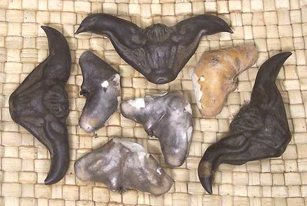

Water Caltrop

[Water Chestnut, Buffalo Nut, Bat Nut, Devil Pod, Ling Nut; Singhara;
Pani-fol (India); Hishi (Japan); Lingjiao (China); Family
Lythraceae, Trapa bicornis and Trapa natans,
also Trapa rossica (endangered)]
These strange looking hooked pods are the seeds of floating water plants.
They have been cultivated in India and China for more than 3000 years, and
were much eaten in Europe from prehistoric times until near the end of the
19th century. They are now nearly extinct in Europe due to climate change
and draining of swamps and wetlands, but Trapa natans has become
a pest in North America, from Vermont to North Carolina and in Washington
State.
The photo is of T. bicornis from East Asia, three in the shell,
(3 inches point to point), and four shelled ones in the middle.
T. natans is more triangular, with much shorter but sharper horns.
It is the species listed as a "noxious weed" in much of the United
States. Seeds do not float, and can remain viable for up to 12 years,
which makes it difficult to eradicate. It's pretty hilarious that
these are in the same plant family as the pomegranate.
More on Myrtles
Buying:
These seed pods (T. bicornis) can be
easily found in Asian markets here in Los Angeles, particularly in
September and October. They are usually labeled "water chestnuts".
Cooking:
These are usually cooked very simply and
eaten out of hand as an appetizer or snack.
- Wash the Caltrops.
- Bring sufficient Water to a boil, about 3 cups for 20
Caltrops.
- Stir in 1/2 T Salt, 1 Star Anise and the
Caltrops.
- Bring back to a boil and simmer for 30 to 40 minutes.
- Drain and let cool.
Eating:
I usually eat them plain, and have found this
method most effective:
- First, cook them, as they are mildly toxic when raw. Drain and
let cool.
- Bite down on the center, from top to bottom, to crack it, then break
it in half. Biting from top to bottom takes less pressure than biting
from side to side.
- Hold a half by the tip of the horn. Bite down fairly close to the
tip. This will force the edible meat to pop out. If any significant
amount remains in the shell, the shell is easily broken apart at
this stage.
Health & Nutrition:
The seed meats
are starchy and nutritious, with a good mineral content. They were a
major food source in prehistoric Europe. Raw nuts are slightly toxic,
but cooking destroys the toxin. As freshly harvested in Asia, they may
have larval cysts of the intestinal parasite trematode
Fasciolopsis buski, but these are destroyed by cooking.
In North America, the main health problem is from stepping on them.
The sharp points, particularly of T. natans, can cause painful
puncture wounds to feet.
my_wcaltz 160922 www.clovegarden.com
© Andrew Grygus - agryg@clovegarden.com - Photos on
this page not otherwise credited are ©
cg1.- Linking to and non-commercial use of
this page permitted.